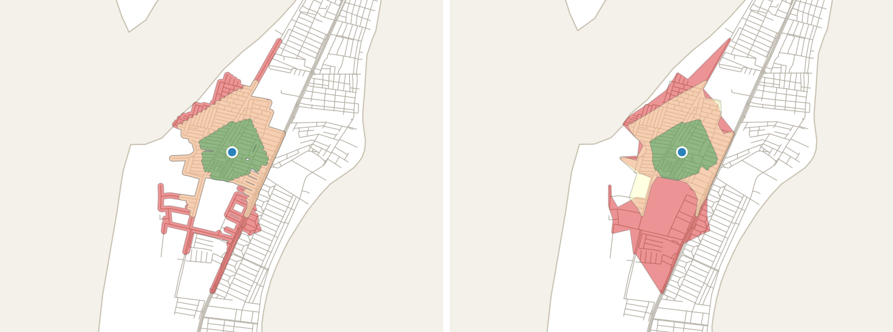

Download the street network of any town once, then calculate one-way aware routes and reachable areas on your own computer — no routing service, no API key, no limits.
⬇ Install the plugin ★ Source on GitHub
Why this plugin
The plugin wraps OSMnx and NetworkX in four Processing algorithms and two interactive map tools.
One click turns a place name into a GeoPackage with nodes, edges, directed arcs and the boundary.
Cars follow the direction of traffic. A comparison mode shows which segments an undirected graph would drive the wrong way.
Areas reachable in 5, 10, 15… minutes from (or to) points, with the arrival time on every road.
Side panels keep the map free: click points, pan and zoom, and see the result at once.
Installation
QGIS already ships geopandas, networkx, shapely and pyproj; only OSMnx has to be added to QGIS's Python.
Open Plugins → Python Console, paste the code below and press Enter. Then restart QGIS.
from pip._internal.cli.main import main as pip
pip(["install", "--user", "--no-deps", "osmnx"])Plugins → Manage and Install Plugins, search for OSMnx Routing & Isochrones. While it is experimental, tick Show also experimental plugins in Settings. You can also use Install from ZIP with a file from the releases.
--no-deps. While a library is missing, the plugin shows a warning with a How to install button and its algorithms stay disabled.Quick start
Download the network once; every other tool reads the GeoPackage.
Processing Toolbox (Ctrl+Alt+T) → OSMnx Routing & Isochrones → 1. Download road network. Type e.g. Cabedelo, Paraíba, Brazil, choose drive and pick an output file.
2. Inspect road network GeoPackage writes an HTML report: CRS, fields, fill rate and a routing diagnosis.
Toolbar button Route on the map: click the origin, then the destination.
Toolbar button Isochrones on the map: every click adds a point and the areas are recalculated.
Map tools
Both tools open a side panel that never covers the map. A click picks a point, dragging pans, the wheel zooms, right click or Esc clears. The road network GeoPackage is taken from the layers already open in the project.
First click = origin, second click = destination; the route is calculated at once in the background. Swap reverses it; a third click starts a new origin. The clicks are kept in the Route points layer.

Every click adds a point (P1, P2…) to the Isochrone points layer and the isochrones are recalculated — untick Calculate after each click to add several points first. The panel lists the area of every time band.

Reference
They work in the dialog, in Run as Batch Process, in the Graphical Modeler and from Python.
osmnx_routing:download_network
Geocodes a place with Nominatim, downloads its streets from Overpass and writes a GeoPackage. Uses the proxy configured in QGIS.
| Parameter | Description |
|---|---|
| Place name | Municipality, district or neighbourhood with state and country, e.g. Campina Grande, Paraíba, Brazil. |
| Network type | all, all_public, drive, drive_service, walk or bike. |
| Output GeoPackage | File to write. A temporary output is deleted when QGIS closes — the log warns about it. |
Outputs: Layers edges (display), arcs (one feature per direction of travel), nodes and boundary, with speed_kph and travel_time.
osmnx_routing:inspect_network
HTML report of every layer: CRS, geometry, extent, fields with % filled, a data sample and a routing diagnosis. Needs QGIS only.
| Parameter | Description |
|---|---|
| Road network GeoPackage | Any GeoPackage; layers may carry a prefix (patos_nodes…). |
| Report | HTML file to write. |
Outputs: An HTML report that opens in the browser.
osmnx_routing:shortest_path
Route between two points on the directed graph (car) or ignoring direction (pedestrian).
| Parameter | Description |
|---|---|
| Profile | Car — respects one-way streets / Pedestrian — ignores direction. |
| Criterion | Shortest distance or fastest (car; uses travel_time). |
| Origin, Destination | Points in any CRS; they snap to the nearest node of the largest connected component. |
| Ignore one-way streets | Comparison: allows driving the wrong way and flags those segments. |
| Walking speed | km/h, default 4.8. |
Outputs: Route lines with order, street name, road type, one-way, wrong_way, length, speed, time and cumulative values; Route points; numbers DISTANCE_KM, TIME_MIN, WRONG_WAY_M.
osmnx_routing:isochrones
Polygons of the areas reachable within each time from a clicked point and/or a point layer.
| Parameter | Description |
|---|---|
| Point / Point layer | A clicked point, a layer (schools, clinics…) or both; the ID field names each point. |
| One isochrone per point | Unchecked = one combined coverage (the nearest point counts). |
| Direction (car) | From the points (where you can get to) or to them (where they can be reached from). |
| Times in minutes | e.g. 5, 10, 15 (also 5;10;15). |
| Polygon method | Band around the reached roads (faithful) or concave hull (smoother). |
| Band width | Metres around the roads, default 40. |
Outputs: Isochrones (source, minutes, area_km2, roads_km), Reached roads with start/end arrival time, Isochrone points.
Most routing on undirected graphs happily drives against traffic. The plugin keeps a directed arcs layer so cars only use streets in the allowed direction.
Why direction matters
Each arc is one direction of travel. The car graph only has arcs where traffic may go; the comparison mode adds the missing reverse arcs and flags them as wrong_way.
routewrong wayorigindestination

Isochrones
From one point or hundreds: school catchments, clinic coverage, delivery areas.



Automation
Every algorithm has a stable id; run it from the Python console or your scripts.
import processing
# 1. download once
processing.run("osmnx_routing:download_network", {
"PLACE": "Cabedelo, Paraíba, Brazil", "TYPE": 2, # 2 = drive
"OUTPUT": "/data/cabedelo.gpkg"})
# 2. route (car, fastest)
res = processing.run("osmnx_routing:shortest_path", {
"NETWORK": "/data/cabedelo.gpkg", "PROFILE": 0, "CRITERION": 1,
"ORIGIN": "-34.8410,-7.0323 [EPSG:4326]",
"DESTINATION": "-34.8417,-7.0371 [EPSG:4326]",
"OUTPUT": "TEMPORARY_OUTPUT"})
print(res["DISTANCE_KM"], res["TIME_MIN"])
# 3. isochrones of a point layer, one per point
processing.runAndLoadResults("osmnx_routing:isochrones", {
"NETWORK": "/data/cabedelo.gpkg", "PROFILE": 1, # 1 = pedestrian
"POINTS": "/data/schools.gpkg", "ID_FIELD": "name", "SEPARATE": True,
"MINUTES": "5, 10, 15", "OUTPUT": "TEMPORARY_OUTPUT", "ROADS": "TEMPORARY_OUTPUT"})Help
patos_nodes…) are recognised and lon/lat layers that lost their CRS are taken as EPSG:4326. Keep one network per GeoPackage.maxspeed when present, otherwise from a default per road type (e.g. residential 30 km/h, primary 60 km/h).